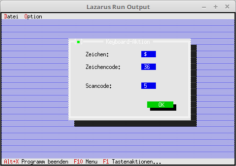

08 EventHandle auserhalb Komponenten
05 Tastatur Event

Man kann einen EventHandle im Dialog/Fenster abfangen, wen man die Maus bewegt/klickt.
Im Hauptprogramm hat es dafür nichts besonders, dies alles läuft lokal im Dialog/Fenster ab.
Im Hauptprogramm wird nur der Dialog gebaut, aufgerufe und geschlossen.
procedure TMyApp.HandleEvent(var Event: TEvent);
var
KeyDialog: PMyKey;
begin
inherited HandleEvent(Event);
if Event.What = evCommand then begin
case Event.Command of
cmKeyAktion: begin
KeyDialog := New(PMyKey, Init);
if ValidView(KeyDialog) <> nil then begin // Prüfen ob genügend Speicher.
Desktop^.ExecView(KeyDialog); // Dialog Mausaktion ausführen.
Dispose(KeyDialog, Done); // Dialog und Speicher frei geben.
end;
end;
else begin
Exit;
end;
end;
end;
ClearEvent(Event);
end;
Unit mit dem Keyboardaktions-Dialog.
unit MyDialog;
In dem Object sind die PEditLine globel deklariert, da diese später bei Mausaktionen modifiziert werden.
type
PMyKey = ^TMyKey;
TMyKey = object(TDialog)
EditScanCode, EditShiftState,
EditZeichen, EditZeichenCode: PInputLine;
constructor Init;
procedure HandleEvent(var Event: TEvent); virtual;
end;
Es wird ein Dialog mit EditLine, Label und Button gebaut.
Einzig besonderes dort, die Editlline wird der Status auf ReadOnly gesetzt eigene Eingaben sind dort unerwünscht.
constructor TMyKey.Init;
var
R: TRect;
begin
R.Assign(0, 0, 42, 15);
R.Move(23, 3);
inherited Init(R, 'Keyboard-Aktion');
// PosX
R.Assign(25, 2, 30, 3);
EditZeichen := new(PInputLine, Init(R, 5));
Insert(EditZeichen);
EditZeichen^.State := sfDisabled or EditZeichen^.State; // ReadOnly
R.Assign(5, 2, 20, 3);
Insert(New(PLabel, Init(R, 'Zeichen:', EditZeichen)));
// PosY
R.Assign(25, 4, 30, 5);
EditZeichenCode := new(PInputLine, Init(R, 5));
EditZeichenCode^.State := sfDisabled or EditZeichenCode^.State; // ReadOnly
Insert(EditZeichenCode);
R.Assign(5, 4, 20, 5);
Insert(New(PLabel, Init(R, 'Zeichencode:', EditZeichenCode)));
// Maus-Tasten
R.Assign(25, 7, 30, 8);
EditScanCode := new(PInputLine, Init(R, 7));
EditScanCode^.State := sfDisabled or EditScanCode^.State; // ReadOnly
Insert(EditScanCode);
R.Assign(5, 7, 20, 8);
Insert(New(PLabel, Init(R, 'Scancode:', EditScanCode)));
// Maus-Tasten
R.Assign(25, 9, 30, 10);
EditShiftState := new(PInputLine, Init(R, 7));
EditShiftState^.State := sfDisabled or EditShiftState^.State; // ReadOnly
Insert(EditShiftState);
R.Assign(5, 9, 20, 10);
Insert(New(PLabel, Init(R, 'Shiftstate:', EditShiftState)));
// Ok-Button
R.Assign(27, 12, 37, 14);
Insert(new(PButton, Init(R, 'OK', cmOK, bfDefault)));
end;
Im EventHandle sieht man, das die Tastatur abgefangen wird. Es wird der Zeichencode und der Scancode ausgegeben.
In der untersten Zeile erscheint ein 3, wen die Shift-Taste mit gewissen anderen Tasten zB. Pfeil-Tasten gedrückt wird.
Die Tastatur-Daten werden an die EditLines ausgegeben.
procedure TMyKey.HandleEvent(var Event: TEvent);
begin
inherited HandleEvent(Event);
case Event.What of
evKeyDown: begin // Taste wurde gedrückt.
EditZeichen^.Data^:= Event.CharCode;
EditZeichen^.Draw;
EditZeichenCode^.Data^:= IntToStr(Byte(Event.CharCode));
EditZeichenCode^.Draw;
EditScanCode^.Data^:= IntToStr(Event.ScanCode);
EditScanCode^.Draw;
EditShiftState^.Data^:= IntToStr(Event.KeyShift);
EditShiftState^.Draw;
end;
end;
end;